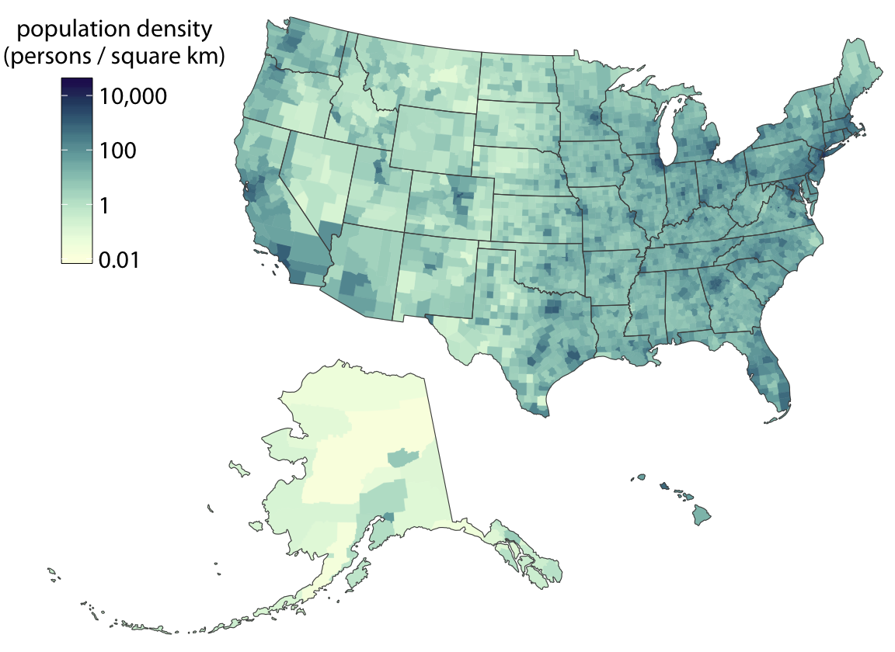
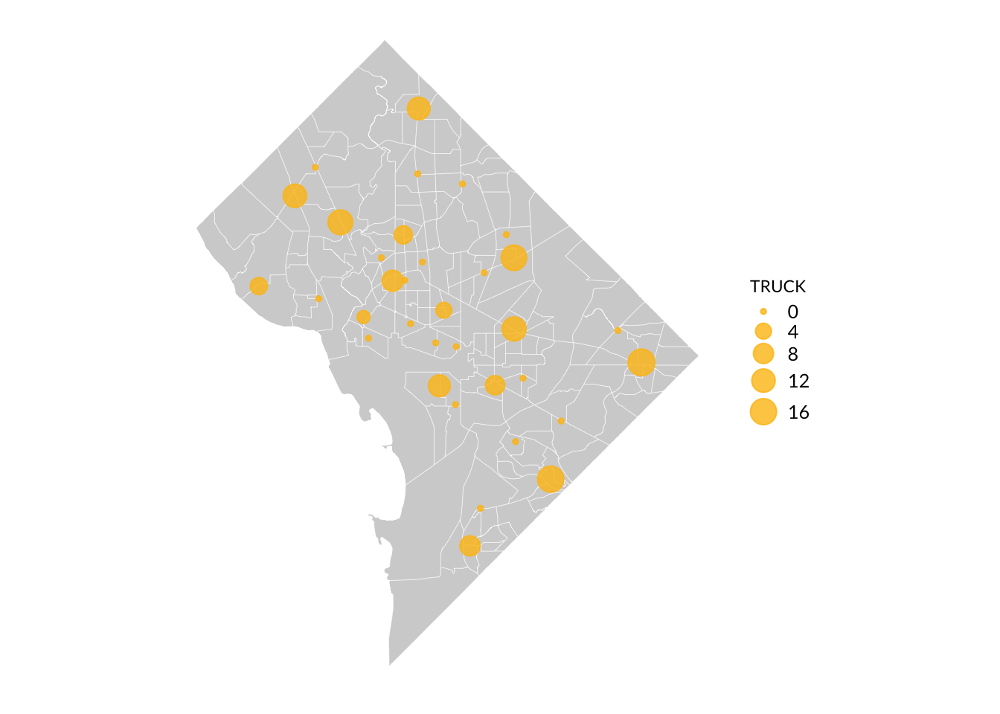
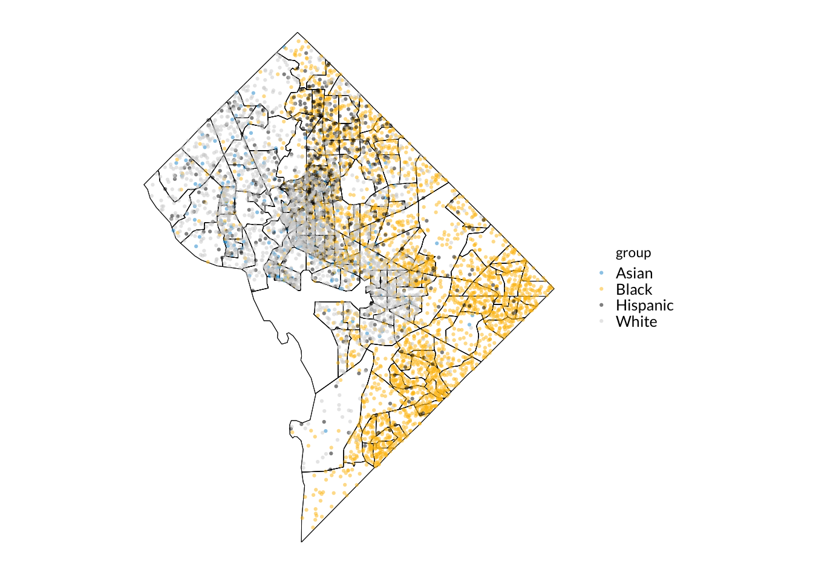
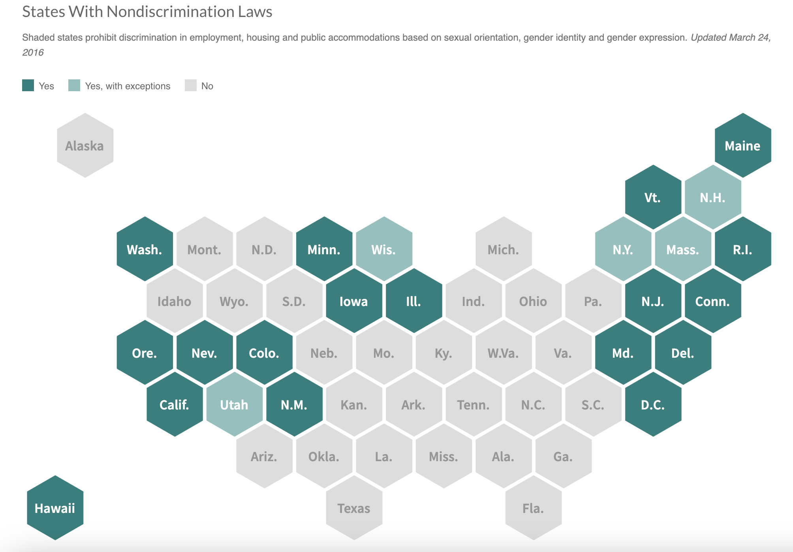
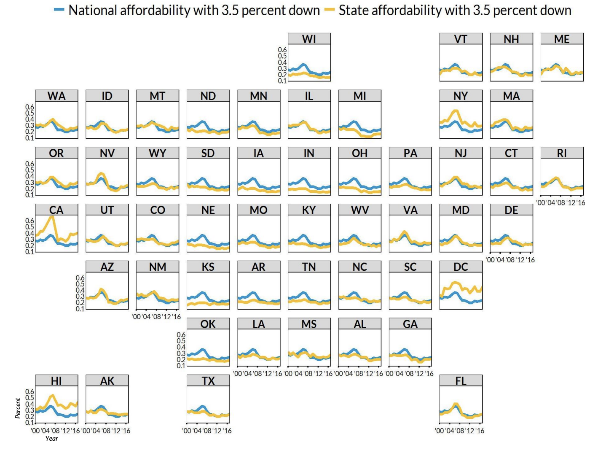

2024-09-23
Mapping vocabulary and types of geospatial data*
Should it be a map?*
R tools for mapping
*Credit to Prof. Pickens’ Lecture 7: Geospatial Visualizations for content in these sections this lecture adapts
Vector data - represents the world using points, lines, and polygons
Raster data - divides surface into cells of constant size
Vector data tends to dominate the social sciences because human settlements tend to have discrete borders
Raster dominates many environmental sciences because of the reliance on remote sensing data
Can convert between them
Source: https://www.gislounge.com/geodatabases-explored-vector-and-raster-data/
Points represent a single longitude/latitude (e.g., location of a building or household)
Lines represent a pair of connected points (e.g., line between two locations)
Polygons represent a collection of points that make a shape (e.g., a Census tract; Precinct boundaries)
There are many options for storing spatial data
The most common: CSV files with latitude/longitude columns, GeoJSON (.geojson), and shapefiles
Packaged as multiple files in one folder - in R, you will typically “read in” the .shp file or a directory of files
De facto standard for GIS developers (meaning they are VERY common), but have some downsides:
A shapefile is composed of at least 3 files, making data transfer tricky
Column names are limited to 10 characters
Their file size is limited to 2 GB
It’s a closed source proprietary ESRI file format (though drivers to read/write shapefiles have been open sourced)
GeoJSON as alternativeGeoJSON has these advantages:
It’s an open source file format
It uses standardized projections and naming conventions
It’s a lightweight single file, makes it easy to transfer small to medium sized files
No size limitations
Maps are 2D representations of 3D data. There is ALWAYS some distortion!
The process of going from 3D to 2D, called projection, necessarily introduces distortions, because a curved surface cannot be projected exactly onto a flat surface
Basis of vector data model
A complete set of assumptions (including projection) used to translate the latitude and longitude information into a two-dimensional map
each CRS is optimized to best represent the:
shape and/or
scale / distance and/or
area
of features in a dataset. There is not a single CRS that does a great job at optimizing all three elements: shape, distance AND area.
Choose a CRS that is optimized for the area you are visualizing (search for options here)
Good US default: "ESRI:102003" (Atlas Equal Earth Projection, used by the Census)
geoJSON default: EPSG:4326 (World Geodetic System, global standard used by GPS)
R package to search for best CRS match if it’s not present in your data: crsuggest
Join on location instead of a common identifier
Two datasets must be the same CRS (!!)
Spatial filtering - “cropping” a map
Spatial union or aggregation - combining multiple geometries into one
Calculating distances
Spatial modeling
Geocoding - turning text (usually addresses) into latitude and longitude
Choropleths
Cartograms
Geofacets (sometimes also called cartograms)
Dot density maps
Bubble maps
Show the magnitude of a variable by coloring individual regions in a map according to the data dimension.
Source: Wilke Figure 15-11
A layer with polygons and a layer with points, with points sized according to a variable.
https://urbaninstitute.github.io/r-at-urban/mapping.html#bubble-maps
A layer with polygons and a layer with points, with each dot representing a constant number of things, people, or other quantifiable phenomena.
Source: https://urbaninstitute.github.io/r-at-urban/mapping.html#dot-density-maps
Just because you’ve got geographic data, doesn’t mean that you have to make a map. Many times, there are more efficient storyforms that will get your point across more clearly. If your data shows a very clear geographic trend or if the absolute location of a place or event matters, maps might be the best approach, but sometimes the reflexive impulse to map the data can make you forget that showing the data in another form might answer other—and sometimes more important—questions. Consider using other graphic types when the interesting patterns are not geographic patterns, or when the geographic data is more effective for analysis than for presentation. Many times, a simple bar chart, column chart, scatterplot or table are more effective at translating your research to a reader.
Source: https://xkcd.com/1939/
Source: https://www.nytimes.com/2011/09/30/us/politics/obama-sees-a-path-to-12-victory-beyond-the-rust-belt.html
Some other map types try to address the problems with choropleths (notably, data distortion).
Cartograms
Geofacets (sometimes also called cartograms)
Source: Adam Cole (NPR) https://www.npr.org/sections/itsallpolitics/2012/11/01/163632378/a-campaign-map-morphed-by-money
Geofaceting arranges sub-geography-specific plots into a grid that resembles a larger geography (usually the US)
Downsides of all geofacets: it can be hard to preserve actual geographic relationships/borders.
Source: https://fivethirtyeight.com/features/where-your-state-gets-its-money/
Hexes resolve some of the border problem, but not all of it.
Source: https://www.npr.org/sections/itsallpolitics/2015/04/28/402774189/activists-urge-states-to-protect-the-civil-rights-of-lgbt-people
Another alternative is to use a traditional facetted plot, arranged as a map.
Source: https://www.urban.org/sites/default/files/publication/94801/barriers-to-homeownership-down-payments-credit-access-and-affordability_3.pdf
Particularly useful for visualizing population
Data representation does not require shape and topology
Projecting linear proximities (i.e., metro map)
Statistical, geographic, and topological accuracy are important to you
Interpretation needs to be simple and free of bias
tigris: For downloading US Census geographies (sister package: tidycensus provides Census data to accompany geographies)
rnaturalearth is similar to tigris, but includes data beyond the US
sf: For managing and analyzing spatial dataframes (predecessor: sp - don’t use this, it’s deprecated! just be aware it exists)
ggplot2: For making publication ready static maps
mapview and leaflet: For making exploratory interactive maps
sf so great?sf handles point, line, and polygon spatial data
sf can read/write geodata in many formats
sf objects are dataframes with an additional geometry column
The geometry column is “sticky”, so sf is compatible with dplyr and ggplot2; you can do manipulations to the main part of your data without losing it (!!!!)
[1] "sf" "data.frame"Simple feature collection with 6 features and 12 fields
Geometry type: POLYGON
Dimension: XY
Bounding box: xmin: -77.05018 ymin: 38.85337 xmax: -76.97464 ymax: 38.92675
Geodetic CRS: NAD83
STATEFP COUNTYFP TRACTCE GEOID NAME NAMELSAD MTFCC FUNCSTAT
1 11 001 004001 11001004001 40.01 Census Tract 40.01 G5020 S
2 11 001 004002 11001004002 40.02 Census Tract 40.02 G5020 S
3 11 001 003600 11001003600 36 Census Tract 36 G5020 S
4 11 001 004201 11001004201 42.01 Census Tract 42.01 G5020 S
5 11 001 004202 11001004202 42.02 Census Tract 42.02 G5020 S
6 11 001 007407 11001007407 74.07 Census Tract 74.07 G5020 S
ALAND AWATER INTPTLAT INTPTLON geometry
1 271037 2414 +38.9208738 -077.0462674 POLYGON ((-77.05018 38.9212...
2 194755 0 +38.9181186 -077.0437209 POLYGON ((-77.0463 38.91631...
3 305616 0 +38.9236744 -077.0296273 POLYGON ((-77.03241 38.9265...
4 204529 0 +38.9162076 -077.0388456 POLYGON ((-77.04166 38.9141...
5 207646 0 +38.9134023 -077.0430254 POLYGON ((-77.04599 38.9145...
6 608700 0 +38.8574823 -076.9850206 POLYGON ((-76.99424 38.8607...ggplot2Feed it the sf object and use geom_sf() command
ggplot2tidycensus to get demographic informationTwo main options:
get_decennial: data from the Decennial Censuses (2000; 2010; 2020)get_acs: data from the American Community Survey (ACS)## variables to explore
vars_explore <- load_variables(2020, "acs5", cache = TRUE)
head(vars_explore)# A tibble: 6 × 4
name label concept geography
<chr> <chr> <chr> <chr>
1 B01001A_001 Estimate!!Total: SEX BY AGE (WHI… tract
2 B01001A_002 Estimate!!Total:!!Male: SEX BY AGE (WHI… tract
3 B01001A_003 Estimate!!Total:!!Male:!!Under 5 years SEX BY AGE (WHI… tract
4 B01001A_004 Estimate!!Total:!!Male:!!5 to 9 years SEX BY AGE (WHI… tract
5 B01001A_005 Estimate!!Total:!!Male:!!10 to 14 years SEX BY AGE (WHI… tract
6 B01001A_006 Estimate!!Total:!!Male:!!15 to 17 years SEX BY AGE (WHI… tract State is first two digits of the geoid for tract
census_api_key(read_yaml("keys.yaml")$census_api_key)
dc_poverty <- get_acs(geography = "tract",
variables = vars_topull$name,
state = unique(substr(dc_tracts$GEOID, 1, 2)),
output = "wide",
year = 2020,
moe_level = 95,
survey = "acs5",
cache_table = TRUE) %>%
mutate(poverty_rate = !!sym(sprintf("%sE",
vars_topull$name[!grepl("001",
vars_topull$name)]))/
!!sym(sprintf("%sE",
vars_topull$name[grepl("001",
vars_topull$name)])))# A tibble: 6 × 4
GEOID B17020_002E B17020_001E poverty_rate
<chr> <dbl> <dbl> <dbl>
1 11001007703 1828 7730 0.236
2 11001007707 1806 4535 0.398
3 11001007708 873 2875 0.304
4 11001007709 686 2148 0.319
5 11001007803 1362 4293 0.317
6 11001007804 944 3930 0.240[1] "tbl_df" "tbl" "data.frame"sf dataframe with polygonsCan use dplyr functions due to compatibility with sf
dc_tracts_wpov <- dc_tracts %>%
left_join(dc_poverty %>% select(GEOID, poverty_rate),
by = "GEOID")
class(dc_tracts_wpov)[1] "sf" "data.frame"Simple feature collection with 2 features and 13 fields
Geometry type: POLYGON
Dimension: XY
Bounding box: xmin: -77.05018 ymin: 38.91443 xmax: -77.04165 ymax: 38.92334
Geodetic CRS: NAD83
STATEFP COUNTYFP TRACTCE GEOID NAME NAMELSAD MTFCC FUNCSTAT
1 11 001 004001 11001004001 40.01 Census Tract 40.01 G5020 S
2 11 001 004002 11001004002 40.02 Census Tract 40.02 G5020 S
ALAND AWATER INTPTLAT INTPTLON poverty_rate
1 271037 2414 +38.9208738 -077.0462674 0.01544974
2 194755 0 +38.9181186 -077.0437209 0.03405122
geometry
1 POLYGON ((-77.05018 38.9212...
2 POLYGON ((-77.0463 38.91631...median_pov <- quantile(dc_tracts_wpov$poverty_rate, probs = 0.5)
p <- ggplot(dc_tracts_wpov %>% filter(poverty_rate != 1)) +
geom_sf(aes(fill = poverty_rate)) +
theme_void() +
scale_fill_gradient2(low = "darkgreen", mid = "white", high = "firebrick",
midpoint = median_pov) +
labs(fill = "Tract-level\npoverty rate") geojson file from DC open data representing homeless service facilitiesReading layer `Homeless_Service_Facilities' from data source
`/Users/rj545/Dropbox/ppol5202_prepwork/session5_geospatial_R/Homeless_Service_Facilities.geojson'
using driver `GeoJSON'
Simple feature collection with 115 features and 68 fields
Geometry type: POINT
Dimension: XY
Bounding box: xmin: -77.09718 ymin: 38.82999 xmax: -76.92901 ymax: 38.98029
Geodetic CRS: WGS 84[1] "sf" "data.frame"Coordinate Reference System:
User input: WGS 84
wkt:
GEOGCRS["WGS 84",
DATUM["World Geodetic System 1984",
ELLIPSOID["WGS 84",6378137,298.257223563,
LENGTHUNIT["metre",1]]],
PRIMEM["Greenwich",0,
ANGLEUNIT["degree",0.0174532925199433]],
CS[ellipsoidal,2],
AXIS["geodetic latitude (Lat)",north,
ORDER[1],
ANGLEUNIT["degree",0.0174532925199433]],
AXIS["geodetic longitude (Lon)",east,
ORDER[2],
ANGLEUNIT["degree",0.0174532925199433]],
ID["EPSG",4326]]Coordinate Reference System:
User input: NAD83
wkt:
GEOGCRS["NAD83",
DATUM["North American Datum 1983",
ELLIPSOID["GRS 1980",6378137,298.257222101,
LENGTHUNIT["metre",1]]],
PRIMEM["Greenwich",0,
ANGLEUNIT["degree",0.0174532925199433]],
CS[ellipsoidal,2],
AXIS["latitude",north,
ORDER[1],
ANGLEUNIT["degree",0.0174532925199433]],
AXIS["longitude",east,
ORDER[2],
ANGLEUNIT["degree",0.0174532925199433]],
ID["EPSG",4269]]p <- ggplot(dc_tracts_wpov %>% filter(poverty_rate != 1)) +
geom_sf(aes(fill = poverty_rate)) +
geom_sf(data = homeless_facilities_t, color = "black") +
theme_void() +
scale_fill_gradient2(low = "darkgreen", mid = "white", high = "firebrick",
midpoint = median_pov) +
labs(fill = "Tract-level\npoverty rate") Order within st_intersects is important:
st_intersects(polygon, points): returns a list where each element represents a polygon from the original dataframe and the list contains the resulting point(s) that intersect (if any)
st_intersects(points, polygon): returns a list where each element represents a point from the original dataframe and the list contains the resulting polygon that intersects (if any)
In this case, want the former
p <- ggplot(dc_tracts_wpov %>% filter(poverty_rate != 1)) +
geom_sf(aes(fill = poverty_rate)) +
geom_sf(data = homeless_facilities_t, color = "black") +
geom_sf_label(data = homeless_facilities_t %>%
filter(PROGRAM_NAME == "Harriet Tubman Day Program"), aes(label = PROGRAM_NAME),
size = 2)+
theme_void() +
scale_fill_gradient2(low = "darkgreen", mid = "white", high = "firebrick",
midpoint = median_pov) +
labs(fill = "Tract-level\npoverty rate") Reviewed following tools for working with spatial data:
Activity: more practice with polygons + alternative map types (geofacets; tilegrams)